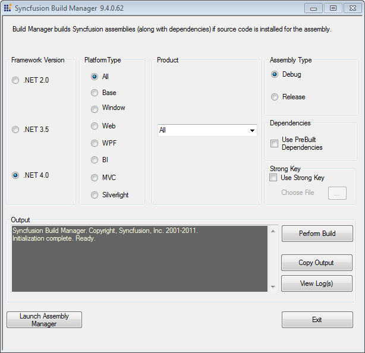

Build Manager
Build Manager allows you to build or debug the assemblies using the Syncfusion source code.
Launching Build Manager
The following are the steps to launch the Build Manager:
1. Open Syncfusion Dashboard.
2. Click Utilities > Build Management.
3. Click Launch button for Build Manager.
4. The Syncfusion Build Manager x.x.x.x window opens.
 Note: Build Manager will be available in Dashboard
only when Source code is installed. You can also launch the Build Manager
from the following location:
Note: Build Manager will be available in Dashboard
only when Source code is installed. You can also launch the Build Manager
from the following location:
C:\Program Files\Syncfusion\Essential Studio\x.x.x.x\Utilities\Build Manager\buildmanagerwindows.exe

Figure 126: Syncfusion Essential Studio Build Manager
5. Select the required setting in the Syncfusion Build Manager x.x.x.x window.
Build Manager Settings
This window contains six sections.
· Framework Version
The Framework Version group box has three option buttons, the .NET 2.0, .NET 3.5 and .NET 4.0. If Visual Studio 2010 is not installed in your system, .NET 3.5 option is selected by default. If Visual Studio 2008 is not installed in your system, .NET 2.0 options is selected by default. You can change the default option by clicking the other option button. The version of the .NET Framework that the assemblies should be built with, is specified here which will be automatically used to rebuild the assemblies.
· Product
The Product group box has a drop-down list box. By default, All is selected. You can change the default option by selecting one of the products in the drop-down list box.
· Platform Type
Syncfusion products typically have a common base library, which forms the basis for the Windows and Web variant. The library category to be built is specified using the Product Type. This frame has eight option buttons. All is selected by default. You can click the required product's option button to perform the build operation.
Note: For assemblies that are not built and
pre-compiled assemblies that ship with the product will automatically be
used.
· Assembly Type
This frame has two option buttons-Debug and Release. Debug is selected by default. To choose release mode for assembly, select Release.
Here, the user can switch between the Debug and Release mode of product configurations. Building the debug version of the assemblies allows you to step into the Syncfusion assemblies, when debugging applications.
· Dependencies
This enables you to specify whether the dependent assemblies of the product have to be used or not. If the Use PreBuilt Dependencies check box is selected, the dependent assemblies of the product, under the selected Product frame will be taken from the Pre-Compiled Assemblies folder, which is presently under the installed location. Rebuilding Assemblies can be restricted to specific assemblies by enabling the pre-built dependencies, in which case the other assemblies would be just pre compiled variants installed with the product.
· Strong Key
This enables you to install the compiled assemblies in GAC. Select the Use Strong Key check box choose a .snk file to achieve this.
· Output
This frame shows the output, i.e., the status of the build operation in a text area.
6. After the selection of required options in the above-mentioned frames, click Perform Build inside the output frame.
Note: Now, the build operation is performed and
the status is updated in the text area, inside the output frame. On completion
of build operation, a dialog box is displayed stating that, "Build operation has
been completed. Please review build output and log files for additional
information".
Refer Also
Assembly Manager, Assembly Management